Quand le quotidien prend toute la place…
Il y a la ferme à faire tourner, les décisions à prendre, les imprévus, les contraintes, les responsabilités. Et parfois des questions qui restent en suspens.
- Qu’est-ce que j’en suis ?
- Qu’est-ce qui compte vraiment pour moi aujourd’hui ?
- Qu’est-ce que j’aimerais voir évoluer ?
- Sur quoi puis-je encore agir ?
Prendre le temps de se poser ces questions n’est pas toujours facile quand on est pris dans le quotidien.
Et si vous vous accordiez deux jours ?
« En quête d’avenir », c’est une résidence de deux jours entre agricultrices et agriculteurs pour sortir du quotidien, reprendre son souffle et prendre du recul sur son métier et sa trajectoire.
Un temps pour partager ce que l’on vit, écouter d’autres expériences, mettre des mots sur ses questionnements, mieux comprendre ce qui nous freine ou nous porte et ouvrir des pistes pour la suite.
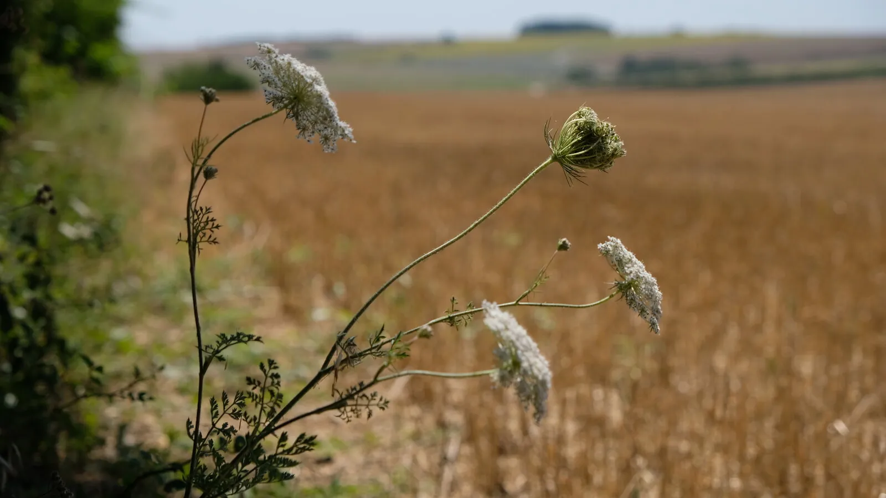
- Sans modèle agricole à défendre.
- Sans réponse toute faite.
- Sans obligation de repartir avec un projet.
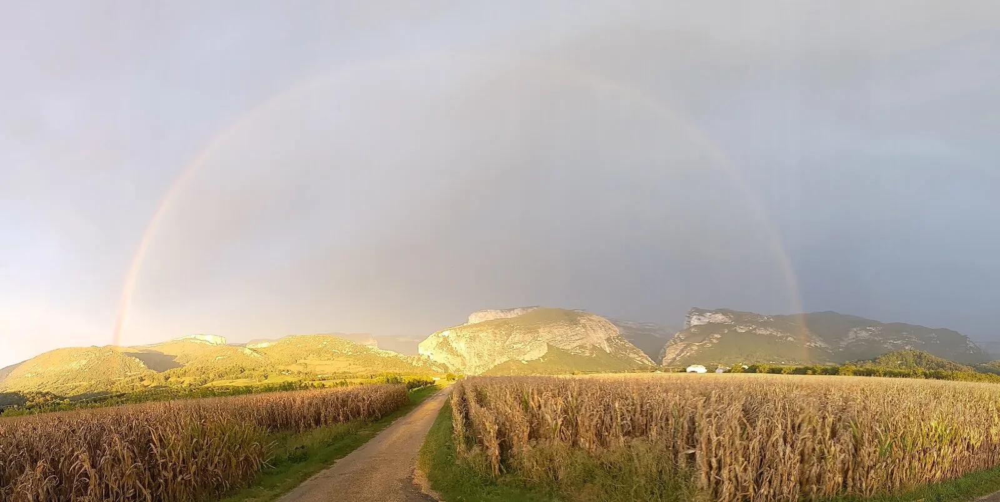
Prochaine résidence
14 et 15 janvier 2027
Chez Emmanuel Ogier, à Gérigney
Aucune date n’est programmée pour le moment. Les prochaines résidences se construisent au fil des groupes, des territoires et des opportunités. Vous pouvez, dès maintenant, nous faire part de votre intérêt, sans engagement.
Je suis intéressé·eDeux jours, un chemin
Il n’y a pas de parcours tout tracé. Pendant deux jours, différentes propositions permettent d’avancer progressivement, à partir de ce que chacun·e vit.
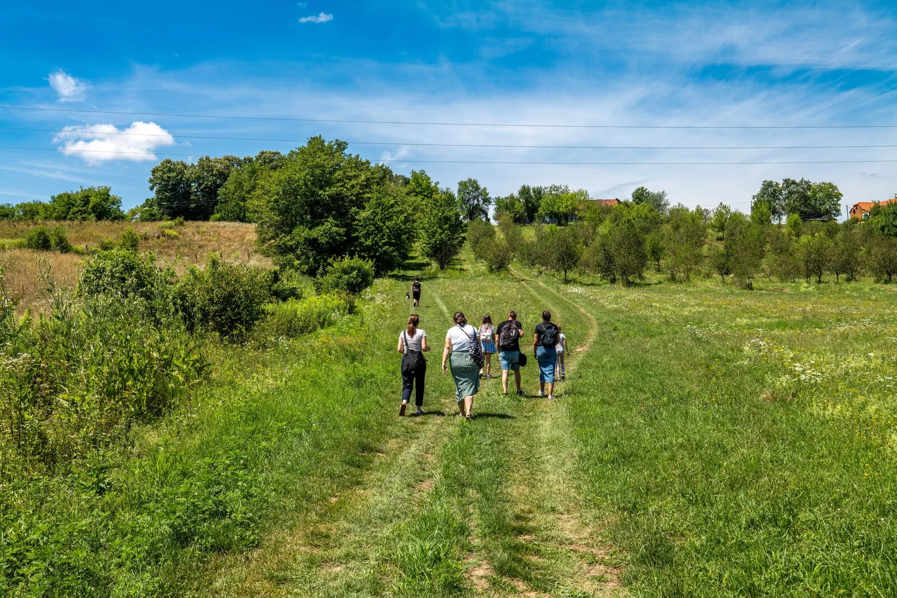
-
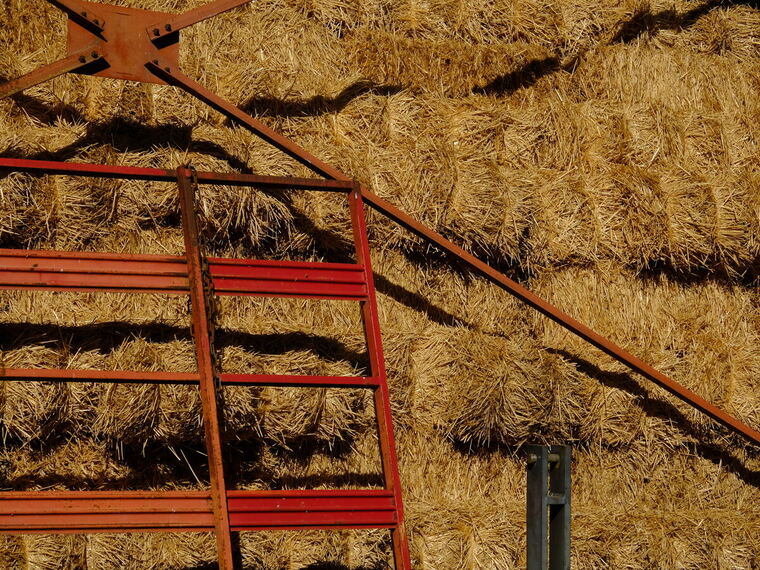
Partir des vécus
Mettre en mots des situations de la ferme ou de son outil de travail, et ce qu’elles révèlent de tensions, de doutes ou de fierté.
-
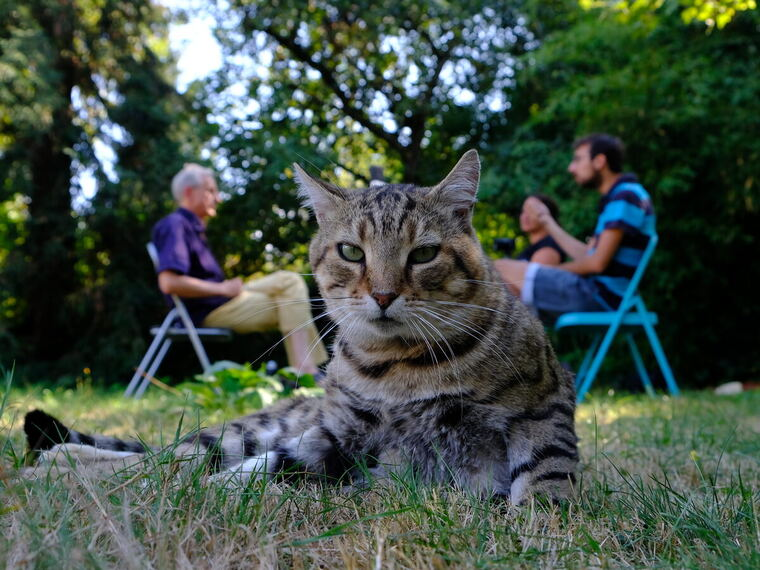
S’inspirer
Écouter le cheminement d’autres agriculteur·rices, avec leurs choix, leurs doutes, ce qui les a aidé·es à avancer.
-
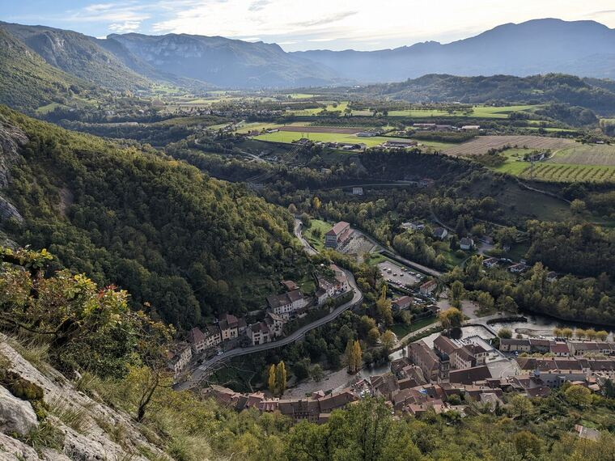
Prendre du recul
Découvrir quelques outils et espaces pour regarder autrement une situation.
-
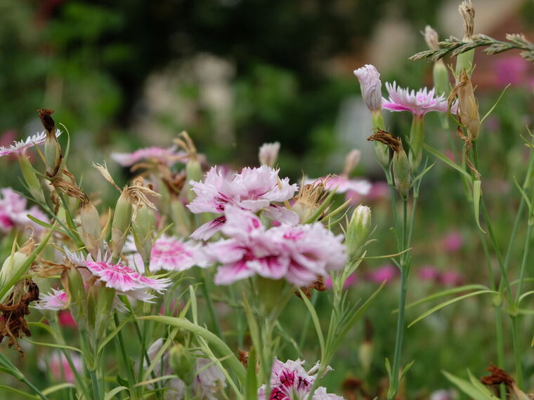
Revenir à ses besoins
Identifier ce qui compte réellement pour soi, derrière les difficultés ou les questionnements.
-
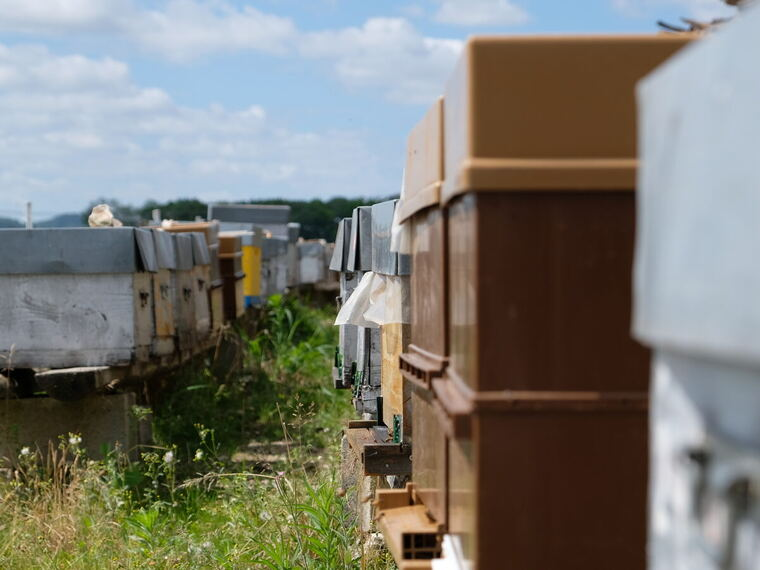
Du « je » au « nous »
Imaginer ce qui ne dépend pas de soi, ce qui peut se construire avec d’autres, ce qui nous échappe.
-
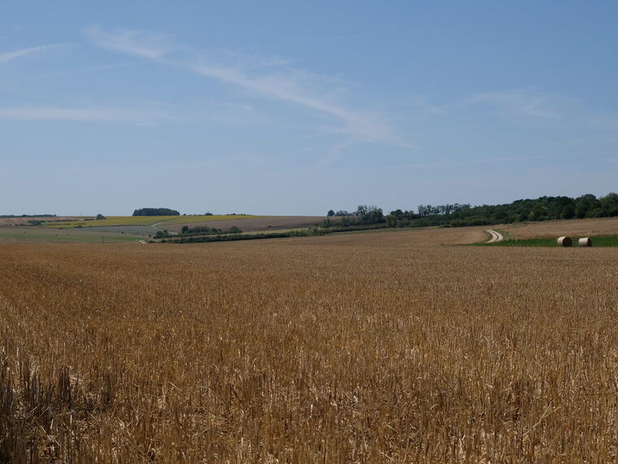
Ouvrir la suite
Prendre un temps pour regarder ce que l’on voudrait, peut-être, imaginer ou modifier pour la suite.
Sans injonction. Chacun repart avec son propre chemin.
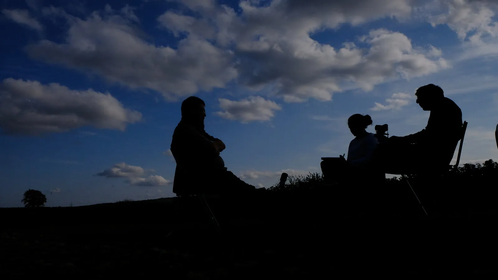
Ce sont les participant·es qui en parlent le mieux
Lors de la dernière résidence, les participant·es ont notamment parlé de la confiance créée dans le groupe, de la richesse de rencontrer des profils agricoles très différents, de la possibilité d’aborder des sujets rarement partagés et du sentiment de se sentir moins seul·e face à certains questionnements.
« Je ne suis pas seule. Des agriculteur·rices très différent·es se posent aussi des questions. Et c’est ok de vivre avec ses émotions. »
« Une parenthèse dans le quotidien, qui libère la parole et permet d’avancer, sans obligation de résultat. »
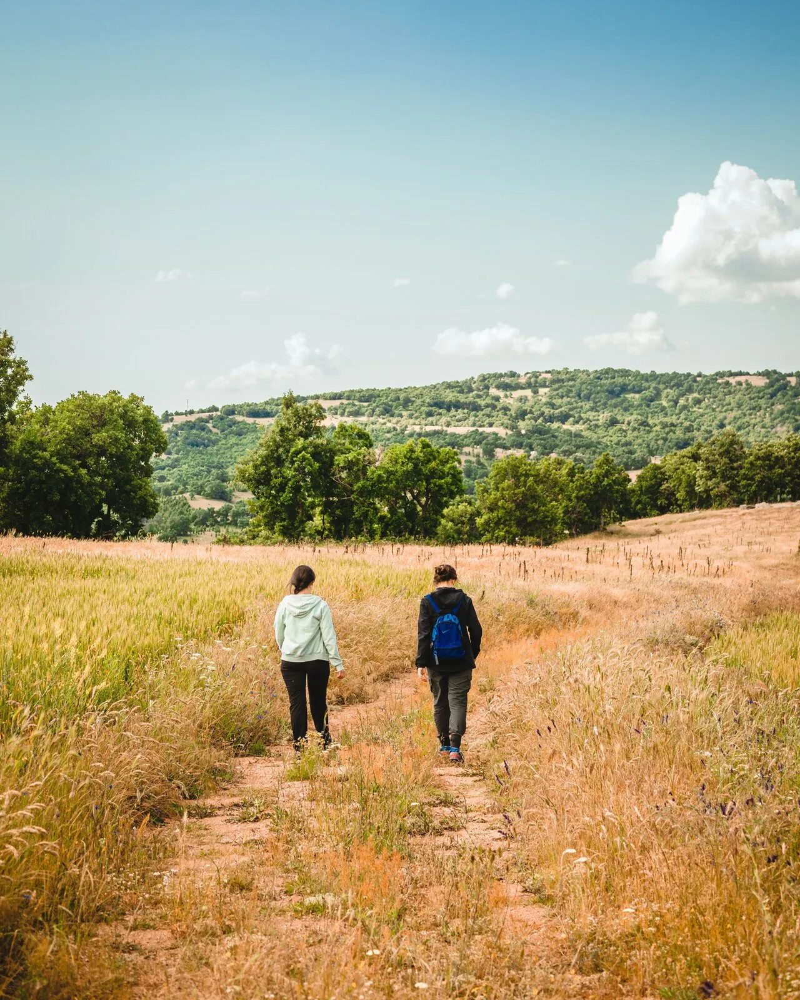
Un petit groupe, un lieu, du temps
- 10 à 12 agricultrices et agriculteursDes filières, pratiques, âges et trajectoires différents.
- Deux jours à l’écart du quotidienLes résidences sont accueillies dans des lieux propices à la rencontre, aux échanges et à la prise de recul.
- Un cadre confidentiel et bienveillantPour permettre une parole libre, dans le respect du rythme de chacun.
- Une résidence ouverte à la diversitéAucun modèle agricole n’est privilégié. Des parcours et des façons de voir différentes qui nourrissent les échanges.
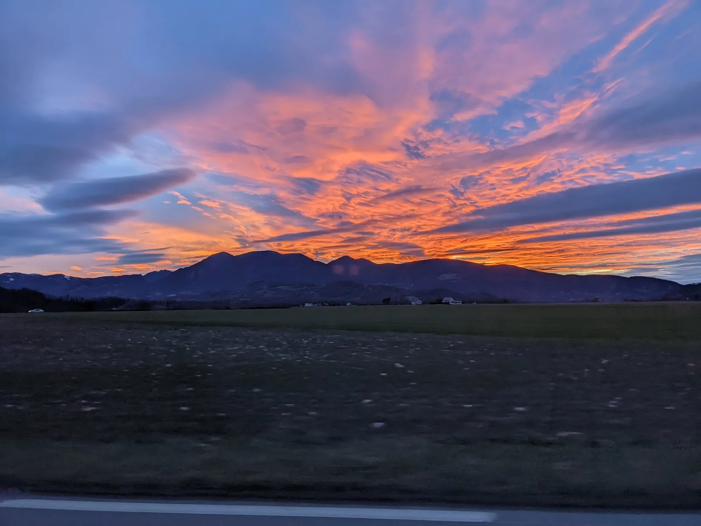
D’où vient cette aventure ?
- Cohésion
- Cohérence
- Capacité d’agir
L’idée est née dans le prolongement du projet de recherche TRANSAFORM, qui a mis en lumière de multiples malaises vécus dans le quotidien du travail agricole : différentes formes de pression, de marginalisation et de manque de reconnaissance vécues par les agriculteur·rices, ainsi qu’un affaiblissement de la cohésion au sein du monde agricole.
Une autre source d’inspiration est venue d’expériences menées auprès de communautés autochtones en Australie du Sud et du dalang indonésien : avant de chercher à réagir avec des acteurs en difficulté, il importe de soutenir leur capacité à être, à donner du sens à leur métier, puis de renforcer les liens pour retrouver une capacité d’agir collectivement.
Dans ce cadre, une première série de deux jours a réuni 12 agricultrices et agriculteurs en 2022 en Bourgogne-Franche-Comté. De cette expérience et des rencontres qui ont suivi est née l’envie de poursuivre et d’enrichir le cheminement avec les résidences « En quête d’avenir ».
Avec, en filigrane, trois questions qui continuent de guider la démarche : la cohésion, la cohérence et la capacité d’agir. Demain, d’autres résidences pourront voir le jour ailleurs, au gré des territoires, des rencontres et des opportunités.
Qui sommes-nous ?
La résidence est accompagnée par Juliette Young et Lou Lecuyer, chercheuses en sciences humaines à l’INRAE, avec Estelle Baillan, médiatrice professionnelle.
Les premières résidences ont également été accueillies par Emmanuel Ogier, agriculteur à Gérigney, qui y a partagé son propre cheminement, avec ses questionnements, ses choix et les évolutions de sa ferme.
L’INRAE soutient financièrement l’organisation des résidences.
- Juliette YoungChercheuse en sciences humaines, INRAE
- Lou LecuyerChercheuse en sciences humaines, INRAE
- Estelle BaillanMédiatrice professionnelle
- Emmanuel OgierAgriculteur à Gérigney, accueille la résidence